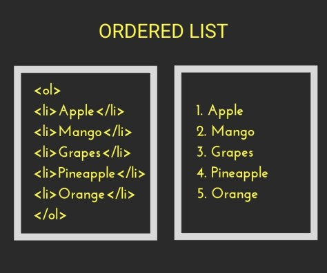

Ordered List
Ordered (numbered) lists are used to display a list of items that should be in a specific order. An example would be cooking instructions:
- Gather Ingredients
- Mix Ingredients
- Bake in an oven for an hour
- Serve
Ordered lists can be displayed with several sequencing options. The default in most browsers is decimal numbers, but there are others available.
Ordered list markup :
